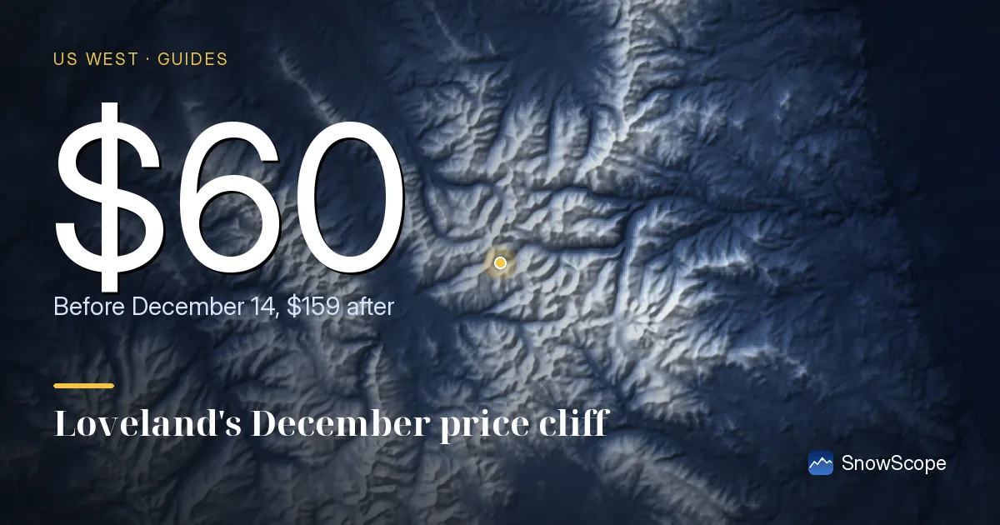

Loveland's December price cliff: $60 before December 14, $159 after
Loveland's price jump on December 14 is sharp: $60 online becomes $159 at the window. The catch is that early December snow is real but not thick, and you are paying for height and hope rather than a full mountain. The numbers show which skiers should take the deal and which should wait.
See the live snow forecast for Loveland Basin Ski Area in the SnowScope appSnow depth, powder alerts and the 3D map, free.
What you get for $60: a mid-mountain bet
On a typical 1 December at Loveland's mid-mountain (11,780 ft / 3,592 m), you have 20 in (50 cm) of snow. Two weeks later, by 15 December, that grows to 29 in (74 cm). The difference matters: early December is playable, but mid-December is safer for a full day.
Half of all winters see 20 in (50 cm) or more by 1 December at that height. By mid-December the odds jump to 67 %, so the second half of the month is a sounder bet. The $60 ticket buys you into a thinner, less certain window.

Height is Loveland's edge in early season
Loveland's lifts range from 10,890 ft (3,318 m) to 12,680 ft (3,866 m), making it one of the highest ski areas in Colorado. That height means early-season snow lasts longer here than at lower resorts. Mid-mountain snow usually settles by the end of September; the base at 10,890 ft (3,318 m) stays bare until later.
On 1 December, the base typically has just 16 in (40 cm), while the top has 20 in (50 cm). This vertical spread is your friend in early December: ski above the base elevation, stay on groomed runs, and you have enough to work with.

How much thinner is early December than mid-winter?
By 25 December, mid-mountain usually reaches 36 in (92 cm). By 31 December, 39 in (99 cm). That is 50 % deeper than early December. March, Loveland's deepest month, averages 54 in (137 cm) at mid-mountain.
The long trend shows early December has become thinner. In winters from 1980-81 to 1994-95, the mid-mountain 15 December average was 32 in (81 cm). In the last 15 winters, it has been 23 in (58 cm). Last winter only had 19 in (49 cm) on that date.
The 4-Pak changes the math from December 14
Once the regular season starts on 14 December, the window price jumps to $159. At that point, Loveland's 4-Pak—four lift tickets for $299—becomes the smarter buy. That is $75 per ticket, cutting the per-day cost by half.
If you plan two or more visits in mid-to-late December, skip the $60 early deal and wait for the 4-Pak. Snow will be thicker, the mountain more open, and your per-ticket cost will be lower.
How it compares: Loveland, Ski Cooper, Wolf Creek
Ski Cooper, near Leadville, holds weekday tickets at $49 and weekend at $99. On a typical 15 December, mid-mountain has 26 in (66 cm)—not much less than Loveland's 29 in. Wolf Creek, the snowiest of the three, has 34 in (87 cm) on that date but charges $96–$110.
Loveland's $60 online ticket beats Cooper's weekend price and Wolf Creek's daily rate, even though the snow is thinner. But if you ski weekdays, Cooper at $49 is cheaper and has nearly equal December snow. The price cliff from $60 to $159 on 14 December is Loveland's true advantage: buy before that date.
Who should use the $60 ticket
Take the early-season deal if you ski groomed terrain, tolerate 20–25 in (50–65 cm) bases, and live near Denver. Buy it online in advance. Avoid the $119 window price—it makes no sense.
Skip it if you want the whole mountain open, need off-piste snow, or can ski in mid-December. After 14 December, buy a 4-Pak or use an Indy Pass (Loveland is a member; Indy Base costs $419, Indy+ costs $469 for two days at each of 300+ resorts).
Tips for skiers
- Buy the $60 ticket online only, not at the window. Advance purchase is the entire bargain.
- Ski above 11,500 ft (3,500 m) in early December; the base is thin and may expose rocks under light coverage.
- Bring wind protection: mid-mountain is 11,780 ft (3,592 m) and December wind is fierce at that height.
- From 14 December onward, the 4-Pak at $299 is better value than the $159 window ticket. Plan your visits by that date.
- Check the Colorado Department of Transportation (CDOT) for I-70 and Eisenhower Tunnel closures; early season runs mean weather risk.
About these numbers
Resort snow depths are the deepest snow on the resort's upper slopes on the date shown; they are estimates for an area, not a measurement at one point. Forecasts can change. Always read the official avalanche bulletin before going off-piste.
Official avalanche bulletins: Colorado Avalanche Information Center
Cite this report
For research, teaching or the press: the numbers and charts are free to reuse under CC BY 4.0 with this citation.
SnowScope (2026), Loveland's December price cliff: $60 before December 14, $159 after, https://snowscope.app/blog/en/2026/11/loveland-ski-area-december-deal-2026.html, accessed 2026-11-14
SnowScope (Atlas Labs). (2026, November 14). Loveland's December price cliff: $60 before December 14, $159 after. SnowScope snow reports. https://snowscope.app/blog/en/2026/11/loveland-ski-area-december-deal-2026.html
BibTeX
@misc{snowscope2026lovelandskiareadecemberd,
author = {{SnowScope (Atlas Labs)}},
title = {Loveland's December price cliff: $60 before December 14, $159 after},
year = {2026},
month = nov,
howpublished = {\url{https://snowscope.app/blog/en/2026/11/loveland-ski-area-december-deal-2026.html}},
note = {Published 2026-11-14 17:47 UTC; accessed 2026-11-14}
}· CC BY 4.0 · Methods, data and tools →
Loveland Basin Ski Area: snow and temperature by height, this winter vs last (tools) →
Follow Loveland Basin Ski Area
Free: a message when fresh snow is coming, and the forecast every morning.
More snow reports

Mt. Shasta Ski Park's upper slopes hold 20 cm (2026-11-13), but the base is bare with rain below 2020 m. Next: 32 cm forecast.

16 budget-friendly US ski areas ranked by December snow odds from 46 past winters, with the day prices we checked: from $49 weekdays to $125 and up.

Wolf Creek leads with mid-slope snow at 361% of normal for November 10, well ahead of typical and signaling significant water storage in the mountains.